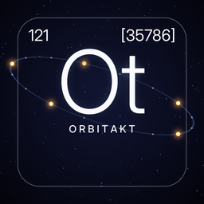

Orbitakt
Privacy policy · effective October 16, 2026
Orbitakt turns the satellites above you into rhythm. It has no accounts, ads, analytics or tracking, and it never sends anything to the developer.
Location
If you allow it, Orbitakt asks iOS for your approximate location (to about a kilometre) while the app is open. It uses it in two ways:
- Which satellites are overhead: calculated entirely on your iPhone. Your location is not sent anywhere for this.
- Place name: iOS's built-in geocoding service (provided by Apple) turns your location into a town name to show on screen.
Your location is kept in memory only. If you don't allow location, Orbitakt uses a default place.
Satellite data
At most twice a day, Orbitakt downloads the public list of active satellites from CelesTrak. The request contains no location or personal information; like any web request, CelesTrak sees your IP address.
Playing with Aether and Bellweathered
When the link is on (it is by default, for a few minutes after launch; you can turn it off in Settings › Together), Orbitakt looks for Aether and Bellweathered on nearby iPhones using Apple's peer-to-peer connection (Bluetooth or direct Wi-Fi, no internet). When connected, the apps exchange musical information directly with each other, encrypted: key, scale, tempo, and a short summary (for Orbitakt: how many satellites are overhead, whether a crewed station is up, and the place name it displays). Nothing is sent anywhere else.
Stored on your device
Orbitakt stores your settings, a random name for pairing, and the cached satellite list. Deleting the app removes them.
Children
Orbitakt does not knowingly collect personal data from anyone, including children.
Changes and contact
If this policy changes, the new version will appear on this page with a new date. Questions: open an issue on GitHub.